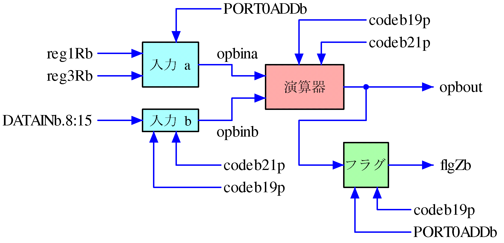
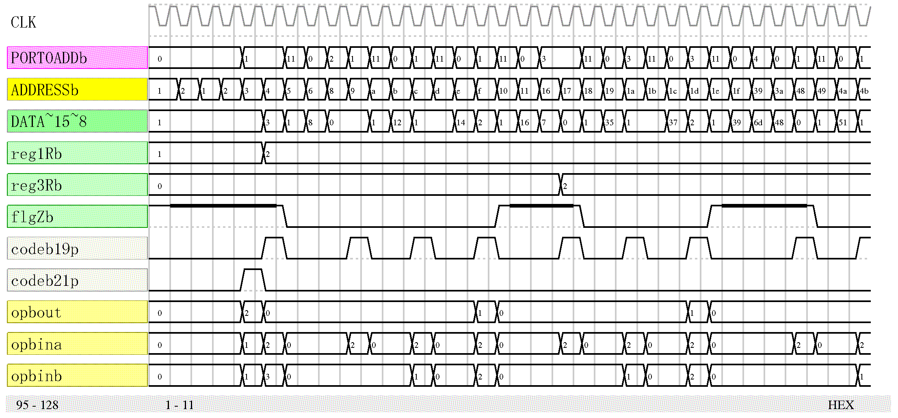

本プロセッサの演算器は CP 命令で使う一致検出のための比較と ADD 命令で使う加算を実行します。 リスト91 は演算器本体と演算器の2 本の入力とフラグの論理ですが 図4.34 のように構成しています。 図4.35 は演算器の実行の様子を示したものです。
{ PPU 演算器 } if (codeb19p) opbout.0=opbina==opbinb; endif if (codeb21p) opbout=opbina+opbinb; endif { PPU 演算器入力a } switch(PORT0ADDb) case 1: opbina.0:1=reg1Rb; case 3: opbina.0:3=reg3Rb; endswitch { PPU 演算器入力b } if (codeb19p|codeb21p) opbinb=DATAINb.8:15; endif { PPU レジスタFZ } if (RESET) flgZb=0; else if (codeb19p) switch(PORT0ADDb) case 1: flgZb=opbout.0; { CP r1,n } case 3: flgZb=opbout.0; { CP r3,n } default: flgZb=flgZb; endswitch else flgZb=flgZb; endif endif

